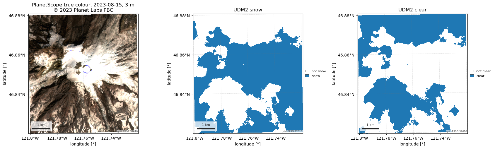
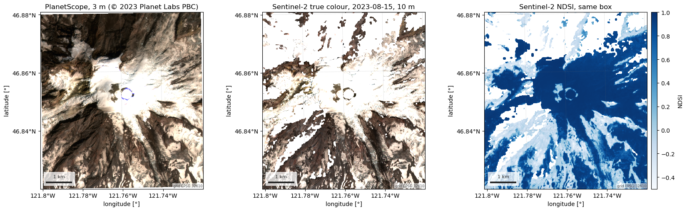

Note
Go to the end to download the full example code.
PlanetScope surface reflectance and UDM2 (Planet)#
PlanetScope is Planet Labs’ constellation of small satellites: 3 m pixels, four or eight bands, and a near-daily revisit, which is what catches a melt event between two Sentinel-2 overpasses. It is the one commercial source in the package. Every scene ships with the UDM2 usable-data mask, whose layers (clear, snow, shadow, haze, cloud) are Planet’s own classification.
Both routes need a Planet account with data access. source="orders-api"
(the default) searches with the Data API and then orders the scenes,
clipped to the AOI and harmonised to Sentinel-2, so Planet charges for the
clipped area only. source="data-api" activates and streams one whole
scene and charges its full area. Searching is free on either route; ordering
spends quota, which is why it is a separate, explicit call and why load
never orders on its own.
PlanetScope has no shortwave-infrared band, so there is no NDSI; the UDM2 snow layer is the snow product. The figures below are a real delivery: one clear August scene over the Nisqually glacier, 41 km², next to the same box from Sentinel-2. Imagery © 2023 Planet Labs PBC.
AOI(bounds=(-121.8000, 46.8200, -121.7200, 46.8800), clip=True)
Where the product comes from, and what each route asks for.
for src in esd.catalog.get("planetscope").sources:
print(f"{src.id:22} {src.title:45} {', '.join(src.requires) or 'no account'}")
orders-api Planet Orders API (clip) planet
data-api Planet Data API (whole scene) planet
Search: free, and it only returns scenes the account may download. Asking
for the surface-reflectance and UDM2 assets up front keeps out scenes that
could not be ordered as analytic_sr anyway. Eight PSB.SD (SuperDove)
frames touch the box on these two days, all cloud-free, but a PlanetScope
frame is small (about 32 × 20 km) and the box sits on a frame boundary for
most of them. clear_percent describes the whole frame, so the search
adds aoi_cover: the fraction of the AOI inside each footprint. Pick on
coverage first, then on clarity.
scenes_gdf = esd.optical.planetscope.search(
aoi, when, cloud_cover=20, asset_types=["ortho_analytic_4b_sr", "ortho_udm2"]
)
print(len(scenes_gdf), "scenes")
print(
scenes_gdf[
["acquired", "instrument", "clear_percent", "snow_ice_percent", "aoi_cover"]
]
.sort_values(["aoi_cover", "clear_percent"], ascending=False)
.to_string()
)
8 scenes
acquired instrument clear_percent snow_ice_percent aoi_cover
20230815_185002_40_247c 2023-08-15 18:50:02.402136+00:00 PSB.SD 92 8 1.000000
20230814_181144_32_24b0 2023-08-14 18:11:44.328279+00:00 PSB.SD 93 7 0.940542
20230814_181142_07_24b0 2023-08-14 18:11:42.073810+00:00 PSB.SD 95 5 0.711831
20230814_184853_05_249c 2023-08-14 18:48:53.050231+00:00 PSB.SD 95 5 0.499044
20230814_181314_58_24af 2023-08-14 18:13:14.587084+00:00 PSB.SD 96 4 0.425499
20230814_184855_19_249c 2023-08-14 18:48:55.190505+00:00 PSB.SD 96 4 0.356386
20230814_181316_84_24af 2023-08-14 18:13:16.841547+00:00 PSB.SD 97 3 0.292271
20230815_185004_53_247c 2023-08-15 18:50:04.535561+00:00 PSB.SD 98 2 0.188747
Warning
This cell spends Planet quota the first time it runs. Ordering is
the only step that does, which is why it is its own explicit call and
why load refuses to order for you. The clip tool makes Planet
deliver COGs cut to the AOI, so the charge is for the box (41 km² here),
not for the whole strip.
Two details make the call cheap to repeat. The order has a fixed name,
and order re-downloads an existing successful order of that name
instead of placing a new one, so re-running this page costs nothing until
Planet expires the old delivery. And harmonize="Sentinel-2" asks
Planet to rescale the surface reflectance, band by band, onto Sentinel-2’s
radiometry: PS2.SD and PSB.SD sensors were built with Sentinel-2-like
pass-bands, and the harmonize tool removes the remaining per-band offset so
a PlanetScope value and a Sentinel-2 value for the same ground can sit in
one time series. It is not a resampling: the pixels stay 3 m. For this
scene, averaged onto Sentinel-2’s 10 m grid and compared with the L2A
acquisition nine minutes later, the per-band median difference is within
±0.03 reflectance, with PlanetScope a little darker over snow.
best_gdf = scenes_gdf.sort_values(["aoi_cover", "clear_percent"], ascending=False).head(
1
)
order = esd.optical.planetscope.order(
aoi,
items=best_gdf,
bundle="analytic_sr",
harmonize="Sentinel-2",
name="easysnowdata-docs-planetscope-nisqually-2023-08-15",
)
print(
"order", order["order_id"], order["state"], "reused" if order["reused"] else "new"
)
for path in order["files"]:
print(" ", path.name)
order e2e9f764-438b-460c-9f74-bd71b9eed6db success reused
20230815_185002_40_247c_metadata.json
20230815_185002_40_247c_3B_udm2_clip.tif
20230815_185002_40_247c_3B_AnalyticMS_metadata_clip.xml
20230815_185002_40_247c_3B_AnalyticMS_SR_harmonized_clip.tif
manifest.json
With the delivery in hand the bands are named, scaled to reflectance, and
the UDM2 raster is decoded into its layers as 0/1 masks with CF flag
attributes, so ps_ds["snow"] plots as a categorical map directly.
The composite uses the same fixed 0–0.5 stretch as the Sentinel-2 example, so the two can be compared side by side. Snow fraction is UDM2 snow over the usable (clear or snow) pixels.
scene_ds = ps_ds.isel(time=0)
rgb_da = scene_ds[["red", "green", "blue"]].to_array("band").clip(0, 0.5) / 0.5
print(f"snow fraction: {float(esd.optical.planetscope.snow_fraction(ps_ds)[0]):.2f}")
fig, axes = plt.subplots(1, 3, figsize=(17, 5.2))
rgb_da.plot.imshow(rgb="band", ax=axes[0], add_labels=False)
axes[0].set_title(
f"PlanetScope true colour, {str(scene_ds['time'].values)[:10]}, 3 m\n"
"© 2023 Planet Labs PBC"
)
esd.plotting.finish_map(axes[0], ps_ds.rio.crs)
esd.plotting.categorical(scene_ds["snow"], ax=axes[1], title="UDM2 snow")
esd.plotting.categorical(scene_ds["clear"], ax=axes[2], title="UDM2 clear")
fig.tight_layout()

snow fraction: 0.55
The same box from Sentinel-2, which needs no account and no quota, as a true-colour composite and as NDSI. The 3 m and 10 m views are of the same afternoon: PlanetScope at 18:50 UTC, Sentinel-2 at 18:59 UTC.
s2_ds = esd.optical.sentinel2.load(
aoi, when, bands=["blue", "green", "red", "swir16", "scl"], mask="scl-default"
).compute()
s2_scene_ds = s2_ds.isel(time=0)
s2_rgb_da = s2_scene_ds[["red", "green", "blue"]].to_array("band").clip(0, 0.5) / 0.5
ndsi_da = (s2_scene_ds["green"] - s2_scene_ds["swir16"]) / (
s2_scene_ds["green"] + s2_scene_ds["swir16"]
)
ndsi_da.attrs = {"long_name": "NDSI (green − SWIR 1.6 µm)"}
fig, axes = plt.subplots(1, 3, figsize=(17, 5.2))
rgb_da.plot.imshow(rgb="band", ax=axes[0], add_labels=False)
axes[0].set_title("PlanetScope, 3 m (© 2023 Planet Labs PBC)")
esd.plotting.finish_map(axes[0], ps_ds.rio.crs)
s2_rgb_da.plot.imshow(rgb="band", ax=axes[1], add_labels=False)
axes[1].set_title(
f"Sentinel-2 true colour, {str(s2_scene_ds['time'].values)[:10]}, 10 m"
)
esd.plotting.finish_map(axes[1], s2_ds.rio.crs)
esd.plotting.map(
ndsi_da, ax=axes[2], cmap="Blues", vmin=-0.5, vmax=1.0,
title="Sentinel-2 NDSI, same box", cbar_label="NDSI",
) # fmt: skip
fig.tight_layout()

Total running time of the script: (0 minutes 16.446 seconds)